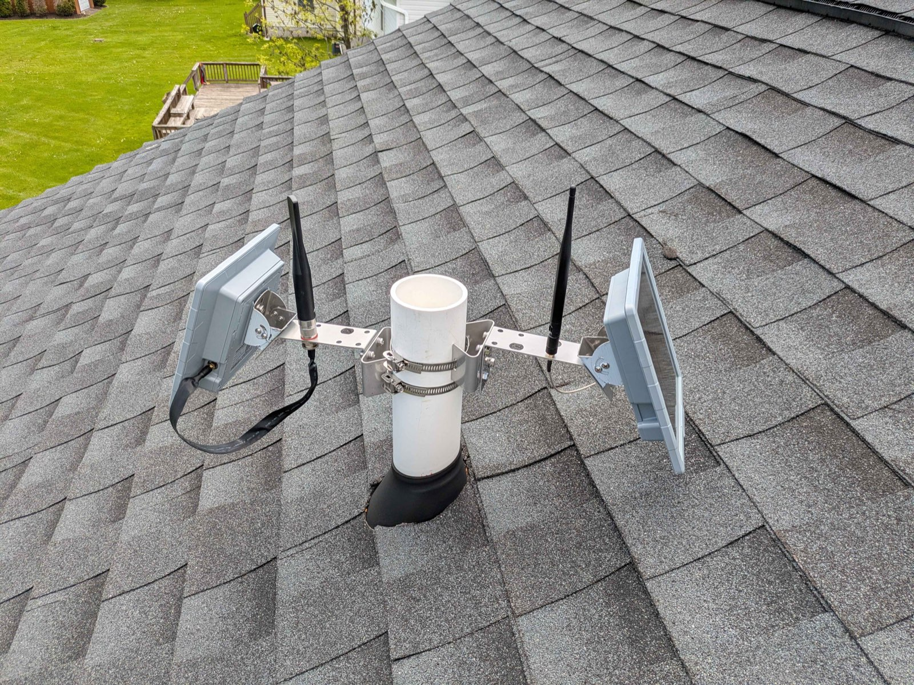

Seeed SenseCAP Solar Node P1-Pro
A ready-made solar repeater with GPS and four 18650 batteries included. Clamp it to a pole, attach the antenna and it's on the mesh. No soldering needed.

What it is
The SenseCAP Solar Node P1-Pro is Seeed's all-in-one outdoor node. Inside a weather-resistant case are a XIAO nRF52840 Plus, a Wio-SX1262 LoRa radio, an L76K GPS module and four 18650 batteries, all charged by a 5 W solar panel on the front. It's the same low-power nRF52840 chip as our Polepeater, so the panel easily keeps up.
It arrives assembled, with the batteries installed and Meshtastic already flashed. In the box are a 2 dBi antenna on a 30 cm cable, an adjustable bracket and a clamp for poles 70-100 mm across. Seeed also sells the plain P1, which has no GPS and no batteries, if you'd rather supply your own cells.
| Processor | Nordic nRF52840 on a Seeed XIAO nRF52840 Plus (Bluetooth LE 5.0) |
|---|---|
| Radio | Semtech SX1262 on a Wio-SX1262 module, up to 22 dBm, covers 902-928 MHz (US) |
| GPS | L76K (GPS, GLONASS, Galileo, BeiDou) |
| Antenna | 2 dBi rubber antenna on a 30 cm RP-SMA cable. Higher-gain antennas are sold separately |
| Power | 5 W solar panel and four 18650 cells (3350 mAh each, included). USB-C for charging and setup |
| Mounting | Adjustable bracket and a clamp for 70-100 mm poles, included |
| Size | 191 x 201 x 42 mm |
| Documentation | Seeed wiki (Meshtastic), Seeed wiki (MeshCore) |
| Firmware | MeshCore, Meshtastic (ships with Meshtastic) |
Role in the mesh
Solar repeater
What it's built for. Clamp it high on a pole or mast facing south, and the panel and four batteries keep it running through cloudy stretches.
Temporary repeater
It's self-contained, so you can take it to an event and strap it to a post. It's bulky to carry, though, compared with the Pillpeater or Icepeter.
Companion
It will pair with a phone, but it's made to live on a pole. For a ready-made companion, see the Seeed SenseCAP MeshTracker X1.
Where to buy and what it costs
One version covers both the EU and US bands, so there's no frequency to choose when ordering. Set the region to US during setup.
| Seller | Notes | Approx. price |
|---|---|---|
| Seeed Studio (official) | Includes GPS, batteries, antenna and mounting hardware | $97 |
Prices last checked November 2026.
Setup
- Screw on the antenna cable and antenna.
- Turn it on with the power button, then connect from the Meshtastic app over Bluetooth.
- Set the region to US and follow our recommended repeater settings.
- Mount it outside, as high as you can, with the panel facing south.
It ships with Meshtastic. To switch to MeshCore, plug it in over USB-C and use the MeshCore web flasher (Chrome or Edge), then follow Seeed's MeshCore guide for the exact steps.
- MeshCore: MeshCore web flasher, then see MeshCore repeater settings.
- Meshtastic: Meshtastic web flasher, then see Meshtastic infrastructure settings.